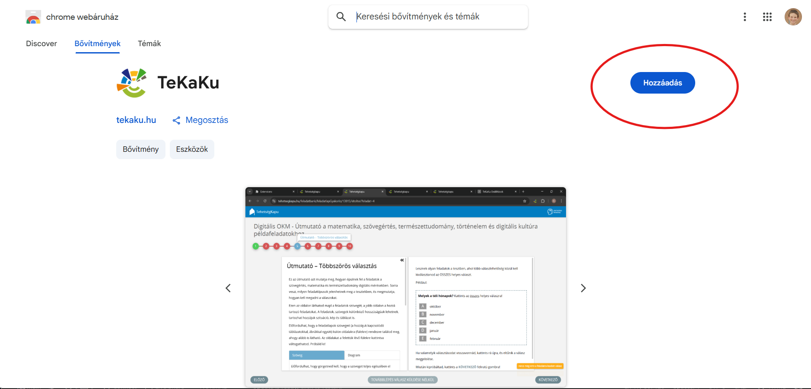

Útmutató
Telepítés

A TeKaKu bővítményt a Chrome Webáruházból tudod letölteni. Keresd a "TeKaKu" kifejezést, vagy kattints ide a közvetlen linkért. Azután kattints a "Hozzáadás" gombra a telepítéshez.
Ezután nyisd meg a a bővítmény beállításait a Chrome bővítmény menüjében (jobb felső sarokban a puzzle ikon), és válaszd ki hogy szeretnéd e engedélyezni az adatgyűjtést majd mentsd el a változásokat. Ezután a bővítmény készen áll a használatra.
Használat
A telepítés után a bővítmény automatikusan elindul, amikor egy kompatibilis kompetenciamérés oldalára látogatsz. Amint megjelenik egy megfelelő kérdés a bővítmény rögtön megpróbálja kitölteni azt. A kitöltés státuszát a jobb alsó sarokban jelzi. Ha nem mondtad meg a bővítménynek hogy gyűjthet-e adatokat, akkor először egy figyelmeztető üzenetet fogsz látni, ami jelzi hogy a bővítmény nem tud működni adatgyűjtés megválaszolása nélkül. Ezt a fentebb leírt módon tudod megjavítani.
A kompetencia mérés közben egy új gomb is meg fog jelenni középen a "Tovább lépés válasz küldés nélkül" felirattal. Ezt akkor érdemes "következő" gomb helyett használni ha nem vagy biztos a válaszodban és nem szeretnéd hogy másnak elküldje a megoldásodat. A következő kérdésre a Ctrl+q billentyűkombinációval is továbbléphetsz. Küldés nélküli továbblépéshez nyomd meg a Ctrl+Shift+q billentyűkombinációt.
A jobb alsó sarokban a bővítmény folyamatosan jelzi az adott feladat kitöltésének státuszát. Ezek és az extra gomb eltüntetéséhez vagy előhívásához nyomd meg a Ctrl+Shift+h billentyűkombinációt. Ha nincs bekapcsolva az automatikus kitöltés, akkor a Ctrl+Shift+f billentyűkombinációval tudod kérni a feladat kitöltését.
Beállítások
A bővítmény beállításai a Chrome bővítmény menüjében érhetők el. Azaz a jobb felső sarokban a puzzle-darabka ikonra kattintva, majd a TeKaKu bővítmény nevére vagy ikonjára kattintva, végül a megjelenő oldalon a "beállítások megnyitása" gombra kattintva. A következő beállítások érhetők el:
- Minimum leadott válaszok száma: Ez a beállítás meghatározza a minimális számot azokból a válaszokból, amelyeket a bővítménynek eddig összegyűjtött más emberektől.
- Azonos válasz arány%: Ez a beállítás azt határozza meg, hogy az eddig leadott válaszoknak milyen arányban kell megyegyezniük egymással ahhoz hogy automatikusan beírja.
- Megoldásaid megosztása másokkal: Ez a beállítás engedélyezi vagy letiltja a bővítmény adatgyűjtési képességét. Ha engedélyezve van, a bővítmény gyűjti a kitöltött feladatok adatait, hogy javítsa a megoldási javaslatokat. Ha le van tiltva, a bővítmény nem gyűjt adatokat, és nem fog működni.
- Automatikus kitöltés: Ez a beállítás engedélyezi vagy letiltja a bővítmény automatikus kitöltési képességét. Ha engedélyezve van, a bővítmény automatikusan megpróbálja kitölteni a kérdéseket, amint azok megjelennek. Ha le van tiltva, a bővítmény nem fog automatikusan kitölteni, de továbbra is használhatod a gyorsindító billentyűket (ctrl+shift+f) a kitöltéshez.
Kipróbálás
A bővítményt letöltés után ki lehet próbálni a kompetenciamérés gyakorló oldalán, ami a következő címen érhető el: https://www.tehetsegkapu.hu/feladatbank/feladatlapGyakorlo/. Ezek közül ajánljuk a következő feladatlapokat amiknél néhány kérdéshez el vannak mentve megoldások (nem a helyes megoldásokat írtuk be, mivel mi is csak teszteléshez használtuk ezeket):
Videó tutorial
A bővítmény használatáról és működéséről tervezünk egy videót is csinálni ami majd ezen az oldalon lesz elérhető.